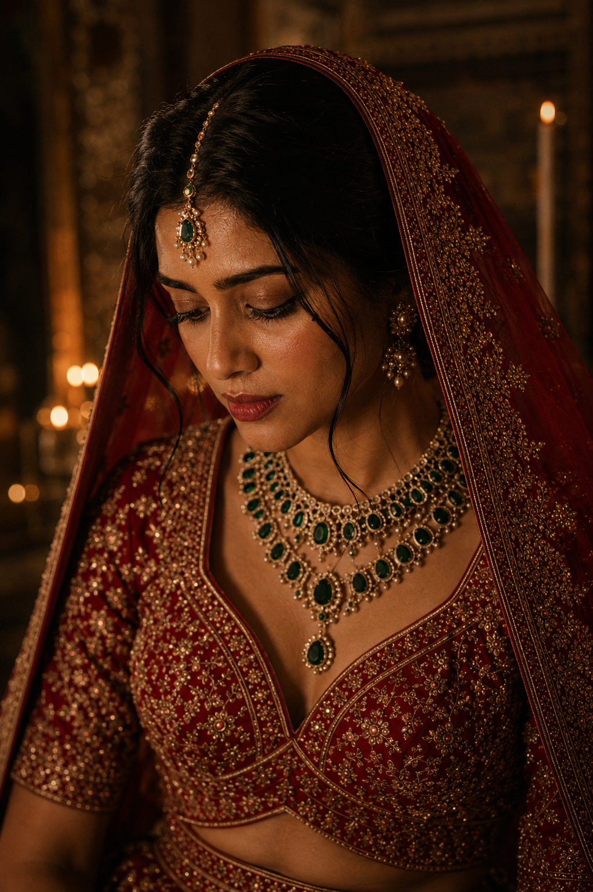
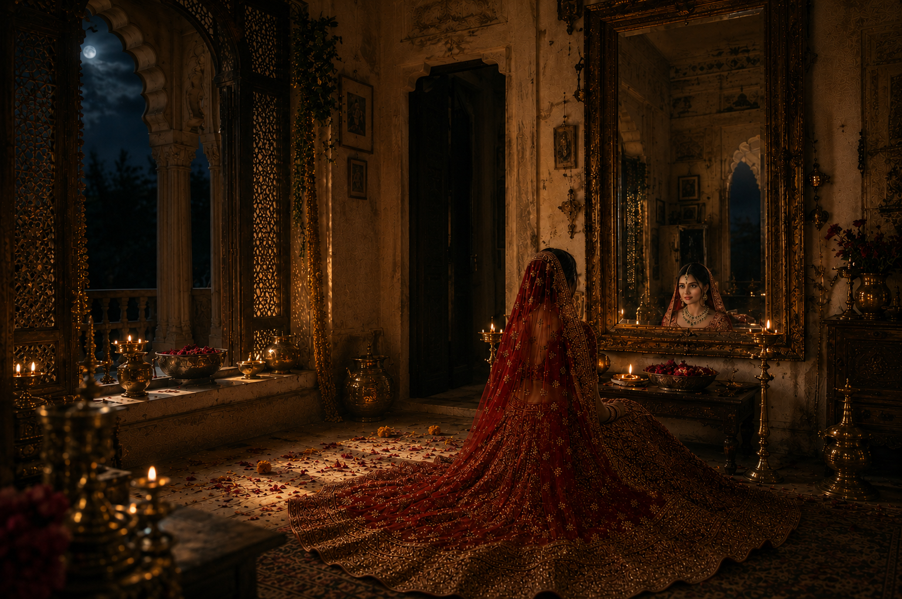
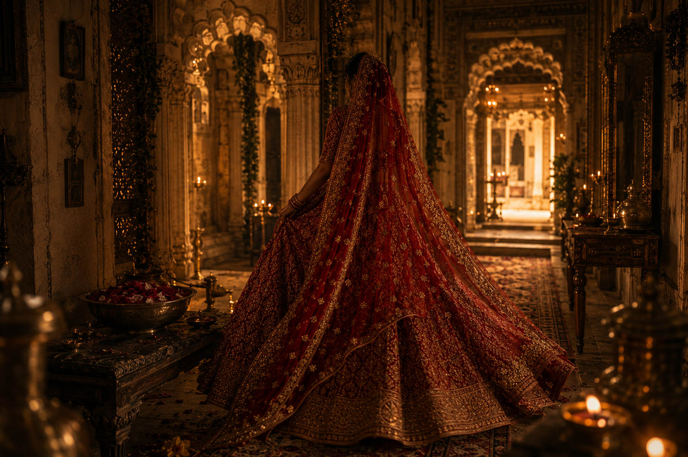

Note: The brand AANCHAL, all visuals, models, props, and generated content in this film are entirely fictional and AI-generated. The story concept, creative direction, and final edit were done by a human. Everything else was produced through AI tools.
AANCHAL · Bridal Film · May 2026
I Made a Bridal Film Without a Camera.
800 credits, 14 frames, and a quiet story about a mother letting go.
Aman AgarwalMay 2026AI Video · Creative · Behind the Build
It started on a plain sheet of paper. No laptop, no tools, no prompts open. Just a pen and whatever was running through my head at the time. The brand, the setting, the colour, the kind of emotion I wanted the film to carry. I wrote it all down before touching anything digital.
The brand is called AANCHAL. It is fictional, built entirely for this film. A saree brand rooted in the idea of inheritance. The story I wanted to tell was simple: a daughter getting ready on her wedding day, and a mother who walks into the room without needing to say much. That feeling of something being handed down quietly. A dupatta. A memory. An entire life compressed into a single gesture.
That was the core. Everything else was built around it.
The haveli — brass diyas, flower petals, carved jharokhas.
The Process
Building the World Before the Story
Once the idea was on paper, I took it to Claude. I explained the brand, the emotional direction, and the visual world I was trying to build. Over a few rounds of back and forth, the story started to take proper shape. Before writing a single prompt or generating a single image, I locked everything down.
The haveli setting. The antique mirror. The red lehenga with gold zardozi. The jewellery. The bride's features. The mother's appearance. Every element of the visual world was decided, documented, and agreed upon before anything was generated. This one step saved me enormous amounts of rework later.
I then used ChatGPT's image generation model to generate all the individual elements separately. The haveli room. The props. The models for both the bride and the mother. One piece at a time, reviewed and locked before moving forward.
"If you do not fix the visual world before you start generating, you will spend half your time trying to recover consistency you never had."
Frame by Frame
Breaking a Story Into 14 Shots
I went back to Claude and broke the entire film into scenes. The final storyboard had 14 frames, each with a shot description, a dialogue cue or a silence note, and a mood direction. Claude helped me write the prompts for each frame. I then tweaked them, iterated, and refined until each prompt felt tight enough to get close to what I had in mind.
Fourteen final frames meant generating somewhere between 20 and 25 images in total. Some of them were genuinely beautiful and very consistent with the world I had built. Others, especially in the later part of the film, were not quite right and had to be discarded.

The lehenga, the maang tikka, and eyes that carry the whole scene.
The Hard Part
When AI Meets a Human Face
This is where AANCHAL was completely different from my previous project. The AURELIUS watch commercial had no human faces in it. It was all product shots and environments, and it worked beautifully. AI handles inanimate objects and set design with remarkable consistency.
AANCHAL was built entirely around human faces. Specifically, Indian faces. And this is where I spent most of my time, and most of my credits.
AI still struggles with face consistency. Sometimes it distorts subtle features. Sometimes it hallucinates an expression that was never there. And when you have two faces in the same frame, the chances of something going wrong increase considerably.
For the animation phase, I used Gemini and Google Flow. I burned through almost all the credits I had. Close to 800, mostly because I had to iterate so many times on frames involving faces. One prompt would produce something that felt cinematic and right. The very next iteration, with the same prompt and the same reference image, would produce something unrecognisable. That unpredictability is still a very real limitation of where this technology is right now.

The bridal chamber — candlelight, old glass, and the weight of the moment.
Sound
A Decision About Voice
The original plan had a voiceover. I had finalised the Hindi script with Claude. I had a clear sense of how the dialogue should sound. Soft, warm, unhurried. But when I tried generating the voice using AI voice models, it did not hold up. The lip sync was off. The voices sounded clean in a way that felt wrong for the film. Too precise, too even, too far from the kind of emotional texture the story needed.
So I made a call. I dropped the voiceover entirely.
For the background score, I tried two platforms: Suno AI and Udio. Both are genuinely impressive for generating music. I was looking for something feminine, something rooted in Indian classical sensibility, and something that stayed quiet enough to let the images breathe. I found what I needed in Udio and stayed with it for the final film.
"The film runs on music alone. I think it is better for it."

She rises, walks toward the light.
The Edit
The Part That Still Belongs to a Human
The final assembly was done manually. I imported everything into VN, made the cuts, adjusted the pacing, added transitions, synced the music, and applied motion effects where the scene needed them. This part is still not something I would hand over to AI. Editorial instinct, the sense of when a shot needs one more second or half a second less, that still requires a person in the room.
AI contributed to roughly 80 percent of this film. The concept came from a person. The planning came from a person. The final edit came from a person. But the images, the animation, the music, all of that was generated.
What I Took Away
Consistency, Faces, and the Future
Inanimate objects and environments are essentially a solved problem. The haveli held up across 14 frames. The lehenga stayed the same. The jewellery, the props, the lighting direction: all consistent. ChatGPT maintained the visual world with impressive precision.
Human faces, especially in animation, are still the hard part. The distortions are sometimes subtle, sometimes obvious. Either way they are still there, and they break the illusion in a way that is hard to work around. This is the clearest gap between where AI video is today and where it needs to be for serious production work.
Voice for emotional content is not there yet. For utility-focused content, AI voice works fine. For something that needs to feel warm and human, the current output still sounds synthetic in a way that pulls you out of the experience.
The planning phase is everything. Locking the visual world before generating a single frame was the best decision I made in this project. It is not a creative constraint. It is what makes consistency possible at all.
Why This Field Excites Me
One Percent of the Budget
While I was working on this project, I came across something that stopped me mid-scroll. Higgsfield, an AI platform, had released a three-minute trailer for what they are calling the world's first 90-minute AI-generated science fiction heist feature film. The film is called Hell Crime.
Fifteen professional directors. Over 16,000 video clips generated. 253 final shots selected for the first episode. Total production cost: under 500,000 dollars. A traditional production of the same scale would have cost closer to 50 million.
One percent of the budget. That is not an improvement. That is a completely different industry.
When I watched those three minutes, the action, the VFX, the consistency across scenes, the human elements, it held up in a way that would have seemed impossible two years ago. And that is exactly why I keep building in this space.
AI is not replacing the person who decides what a story should feel like. But it is rapidly closing the gap between having an idea and being able to show it to the world. That gap used to require a studio, a crew, and months of production. Now it can start with a sheet of paper and a conversation.
I am genuinely excited about what comes next.
The Full Storyboard — 14 Frames
"Virasat" — The Inheritance · 60-second bridal film · Maa ke aanchal se, aapke aangan tak.